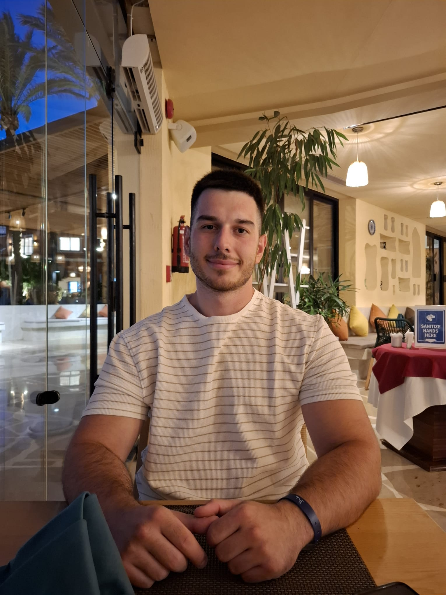

DS
.
EN
SR
DE
GitHub
LinkedIn
Kotlin
/
KMP
/
Jetpack Compose
/
TypeScript
/
Node.js
/
Express.js
/
REST APIs
/
Git

Android / Kotlin
Kotlin
Kotlin Multiplatform
Jetpack Compose
REST API
Git
Backend TypeScript
TypeScript
Node.js
Express.js
REST APIs
Clean Architecture
Unit Tests
Docker
Databases
JavaScript
React
Vue.js
MongoDB
Go
HTML & CSS
Android Developer
Nissatech Innovation Centre
Niš, Serbia
Kotlin
KMP
Compose
REST
01
Junior Backend Developer — TypeScript / Node.js
02
Backend Developer — Node.js / Express.js
03
Software Developer — TypeScript
04
Junior Full-stack — backend-heavy
05
Android / Kotlin Developer
—
Cinema Microservices System
Go · Microservices · Docker · REST
Go
Microservices
Docker
REST
[ architecture diagram ]
[ store UI ]
FULL-STACK
MERN Toy Store
Mongo · Express · React · Node
GitHub ↗
[ website ]
TYPESCRIPT
iTravel Website
TypeScript
GitHub ↗
[ terminal / API ]
BACKEND API
API ToyBeam
JavaScript · REST
GitHub ↗
→
↓ CV (EN)
↓ CV (DE)
dusan.stoiljkovic@email.com
→
github.com/DusanStoiljkovic
→
linkedin.com/in/dusan-stoiljkovic
→
© 2026 Dušan Stoiljković